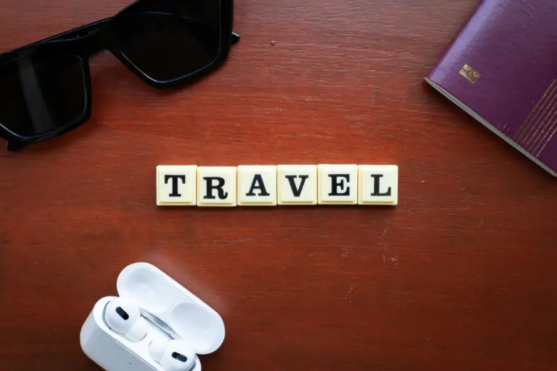

Preparación esencial antes de viajar
Viajar al extranjero es una experiencia enriquecedora, pero requiere una preparación adecuada para garantizar tu seguridad y comodidad. Estos consejos te ayudarán a planificar un viaje sin contratiempos.
Documentación
Asegúrate de tener todos tus documentos en regla y hacer copias de seguridad.
- Verifica la vigencia de tu pasaporte (mínimo 6 meses)
- Investiga si necesitas visa para tu destino
- Haz copias físicas y digitales de tus documentos
- Comparte tu itinerario con familiares o amigos
Salud
Prepárate para cualquier emergencia médica durante tu viaje.
- Contrata un seguro de viaje con cobertura médica
- Lleva un botiquín básico de primeros auxilios
- Investiga si necesitas vacunas específicas
- Anota información de contacto de emergencia
Finanzas
Organiza tus recursos económicos para evitar problemas financieros.
- Notifica a tu banco sobre tu viaje
- Lleva diferentes métodos de pago
- Investiga el tipo de cambio y comisiones
- Guarda efectivo en diferentes lugares
Seguridad en el Destino
La seguridad debe ser una prioridad durante tu viaje. Estos consejos te ayudarán a mantenerte seguro en tu destino:
- Investiga sobre la situación de seguridad del país que visitarás
- Regístrate en el sistema de protección consular de México
- Guarda los números de emergencia locales y de la embajada mexicana
- Evita zonas peligrosas y sigue las recomendaciones locales
- Mantén un perfil bajo y evita mostrar objetos de valor
Consejos para elegir alojamiento seguro

El lugar donde te hospedes puede influir significativamente en la seguridad de tu viaje. Considera estos aspectos al elegir tu alojamiento:
Ubicación
Prioriza zonas céntricas o turísticas con buena reputación de seguridad y acceso a transporte público.
Seguridad
Verifica que el alojamiento cuente con personal de seguridad, cámaras y cajas fuertes para tus objetos de valor.
Reseñas
Lee opiniones de otros viajeros, especialmente aquellas que mencionen aspectos de seguridad y limpieza.
Habitación
Verifica que las puertas y ventanas tengan cerraduras adecuadas y utiliza siempre el cerrojo adicional.
Transporte seguro en el extranjero

Moverse de forma segura en un país extranjero requiere atención y planificación. Sigue estas recomendaciones:
Transporte público
- Investiga rutas y horarios con anticipación
- Mantén tus pertenencias siempre a la vista
- Evita viajar de noche en zonas desconocidas
- Utiliza aplicaciones oficiales para consultar rutas
Taxis y servicios de transporte
- Utiliza servicios oficiales o aplicaciones reconocidas
- Verifica que el conductor y vehículo coincidan con la información
- Comparte tu ubicación con alguien de confianza
- Evita compartir información personal con el conductor
Alquiler de vehículos
- Contrata un seguro completo
- Familiarízate con las leyes de tránsito locales
- Utiliza GPS o aplicaciones de navegación
- Estaciona siempre en lugares seguros y vigilados
Respeto a la cultura local
Respetar las costumbres y tradiciones del país que visitas no solo enriquece tu experiencia, sino que también contribuye a tu seguridad:
- Investiga sobre las normas culturales y religiosas del destino
- Viste de manera apropiada según el contexto cultural
- Aprende algunas frases básicas en el idioma local
- Respeta monumentos, sitios históricos y espacios religiosos
- Pide permiso antes de fotografiar a personas locales
Uso seguro de la tecnología
En la era digital, proteger tus dispositivos y datos durante el viaje es fundamental:
Redes Wi-Fi
Evita conectarte a redes públicas no seguras. Utiliza una VPN para proteger tus datos cuando uses Wi-Fi público.
Dispositivos
Mantén tus dispositivos contigo o en lugares seguros. Configura bloqueos de pantalla y opciones de rastreo.
Respaldos
Haz copias de seguridad de tus fotos y documentos importantes en la nube regularmente.
Pagos online
Utiliza solo sitios seguros (https://) para realizar compras o reservas en línea durante tu viaje.